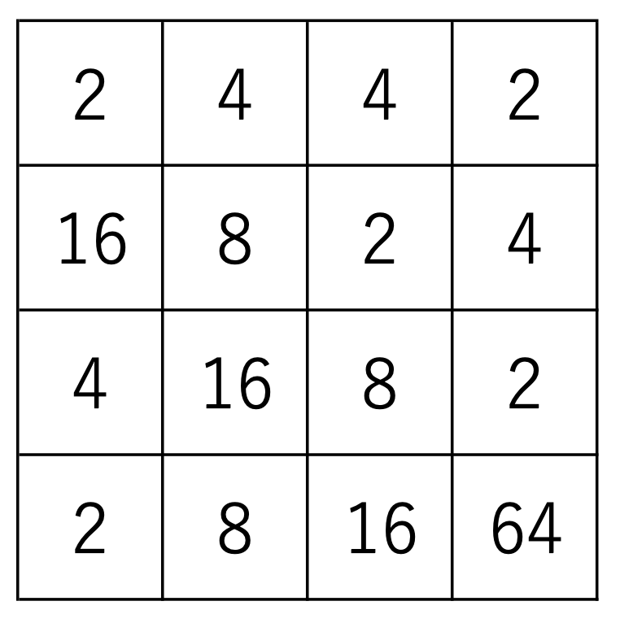

Stage 5 ゲーム終了を判定する
5-2 手詰まりを判定する
同じ board.py ファイルの isOver メソッドを見ていきましょう。
def isOver(self, *, logger=None):
logger = logger or self.logger
local_board = Board(size=self.size, board=self.board, goal=self.goal, logger=self.logger, prob4=self.prob4)
for direction in [UP, DOWN, LEFT, RIGHT]:
if local_board.move(direction):
logger.info('direction {} is available'.format(direction))
return False
# here, no move is available
return True
ここでは盤面が数字でビッシリ埋め尽くされてゲームオーバーになったかを判定します。
でも実際にどうやって判定すんの？
上下左右いずれの方向にも動かすことができなくなればゲームオーバーですから、実際に全方向に動かしてみればいいんです。
~~~~~~~~~~~~~~~
しかし、このコードでは self に相当するインスタンスは、これから先も使っていきますので、実際に動かすわけにはいきません。
どういうこと？
もし一度 self の盤面を動かしてしまうと「実は動かせました」って時に元に戻せなくなります。
ちょっと動かしてみよっと
あれ？動かせちゃったけど前どんなんだったっけ？？
ってなりますね。
~~~~~~~~~~~~~~~
そこで、このメソッドの中では新しく local_board という を作っています。
def isOver(self, *, logger=None):
logger = logger or self.logger
local_board = Board(size=self.size, board=self.board, goal=self.goal, logger=self.logger, prob4=self.prob4)
for direction in [UP, DOWN, LEFT, RIGHT]:
...
ここに self の情報を全てコピーする、要はクローンを作っているんです。発想としては「危険な場所は影武者に行かせる」といったところでしょうか。
インスタンスの宣言の際に全ての引数を呼び出して self と揃えます。というよりも流れとしては「この影武者システムができるようにコンストラクタを設定する」というのが妥当でしょう。
それで local_board を動かすわけだ。
そうですね。for ループを使って影武者の盤面を全ての方向に動かしてみて、もし move メソッドが True を返すようであればその方向に動かせるわけですから「まだゲームオーバーじゃない」False をリターンします。
for direction in [UP, DOWN, LEFT, RIGHT]:
if local_board.move(direction):
logger.info('direction {} is available'.format(direction))
return False
ログで「この向きにはまだ動かせますよ」と言ってあげるのがいいでしょう。
上下左右試してみて move メソッドが全部 False「動かせない」だったら、もう手のうちようがないので「ゲームオーバー」True をリターンです。
# here, no move is available
return True
お疲れ様でした。